Livro de
Invenções
do Marck
Projetos, plantas e experimentos
Livro de
Invenções
do Marck
Projetos, plantas e experimentos
Volume I
Antes de ler
Vire a página arrastando de lado, pelas setas ou pelas teclas do teclado. O Índice leva a qualquer projeto. A fita vermelha marca a página onde você parou.
As plantas aparecem como pranchas coladas nas páginas. Toque numa prancha pra abrir inteira.
Aprovado pelo mestre
O mestre já aprovou o projeto.
Pendente de aprovação do mestre
O mestre ainda não aprovou o projeto.
Alcances, pesos, pressões e danos são propostas do Marck. Quem decide os números é o mestre.
Parte I
Giftklaue
A luva de garras e as versões dela.
Projeto 01
Giftklaue
Garra Venenosa
Aprovado pelo mestre
T.O Categoria: a definir
PROJETO BÉLICO.
Em repouso, a Giftklaue é uma luva de couro escuro, simples, sem nada que chame atenção além de um punho um pouco mais grosso que o normal. Quem olha vê só a luva de um cientista. Ao acionar o mecanismo do punho, placas de aço leve e bronze deslizam pra fora do antebraço, cobrem a mão e o braço, e a luva vira uma manopla blindada, com garras ocas de aço saindo das pontas dos dedos. Tudo acontece num movimento só. O contrário também vale: as placas recolhem e o usuário volta a parecer inofensivo.
Pelo antebraço correm tubos de vidro grosso, escolhidos porque o vidro aguenta o veneno que o metal não aguenta. Cada golpe das garras injeta o conteúdo no alvo, como a presa de uma cobra. O protótipo atual carrega um veneno de luta, que deixa o corpo dormente e derruba os atributos físicos.
O protótipo ainda não está pronto. O Marck trabalha em quatro melhorias:
- Hidráulica: pistões nos dedos e no antebraço pra dar à manopla a força que ele não tem. A força vem da manopla, não do corpo.
- Dardos: agulhas de veneno que saltam dos dedos e acertam à distância, cada uma com uma dose selada.
- Tubos melhores: mais resistentes e com mais controle da dose.
- Arsênio: ainda não pode ser carregado, porque o arsênio corrói o metal. Resolver isso é o que separa o protótipo da Ruína.
Soluções em estudo:
- Nada de metal encostando no composto: tubos e válvulas de vidro e porcelana, vedações de cera ou borracha e pontas das garras banhadas a ouro.
- Ampolas seladas e trocáveis, que só quebram quando a garra perfura. Os dardos seguem a mesma ideia: cada um é uma ampola com agulha, descartável.
- Dois compartimentos: o arsênio num tubo e a fórmula da doutora em outro, que só se misturam na ponta da garra, no momento do golpe.
- Um disco regulador no punho muda a proporção da mistura. O catalisador arcano entraria depois nesse mesmo sistema.
- O tubo da fórmula sozinho cura, então a mesma manopla poderia salvar um aliado.
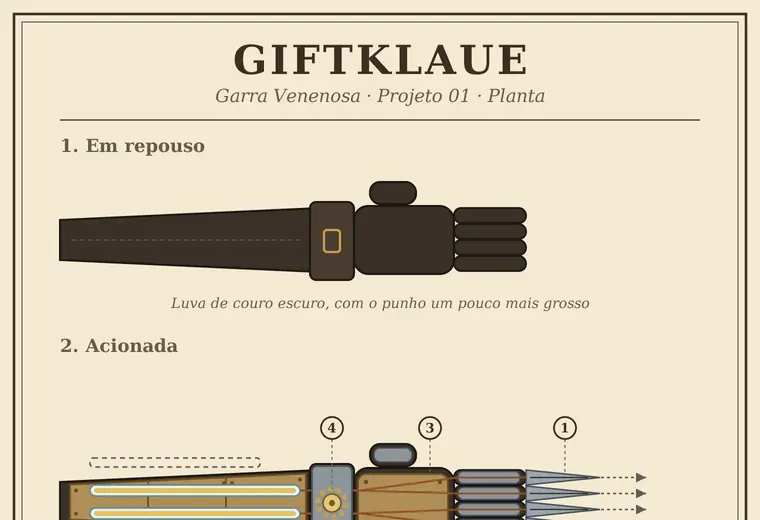
Números, bônus e quantidades pendentes de aprovação do mestre.
Projeto 08
Manopla hidráulica
Giftklaue II
Aprovado pelo mestre
A hidráulica da Giftklaue, pronta e aprovada pelo mestre. É uma das quatro melhorias do Projeto 01
A manopla pesa 12 kg. Ativar custa 1 ação e 5 de energia, porque o Marck é fraco fisicamente e o peso cobra dele.
Na manopla hidráulica os dedos fecham pela pressão do óleo, não pela força do braço. A força vem da manopla, não do corpo.
Fechar o punho aperta uma bomba, que empurra o óleo pra um acumulador de mola. O acumulador guarda a pressão. Quando o gatilho abre a válvula, a mola solta o óleo de uma vez e ele empurra os cilindros, um por dedo, ligados por tubos de cobre. Um manômetro de latão mostra a pressão, sem eletricidade.
Força é pressão vezes área, e o óleo leva a mesma pressão pra todo cilindro. A manopla ganha em força e perde em curso: os dedos fecham devagar, mas firmes.
De onde veio a ideia
Walter é um protótipo antigo de robô autoconsciente, e a mão dele segura 4 toneladas de força. O Marck estudou esse sistema hidráulico e adaptou pra uma luva. Quanto a manopla chega perto disso, o mestre decide.
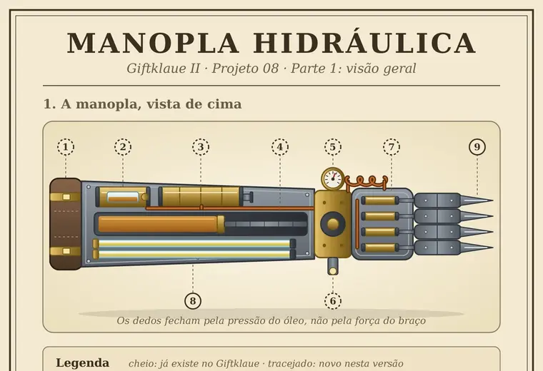
O circuito do óleo
O óleo sai do reservatório, que tem um visor de vidro pra ver o nível, passa pela bomba do punho, pelo acumulador e pela válvula do gatilho, chega aos cilindros e volta. Válvulas de retenção fazem o óleo andar num sentido só. Se a pressão passa do limite, a válvula de alívio deixa o óleo escapar de volta pro reservatório, como numa caldeira.
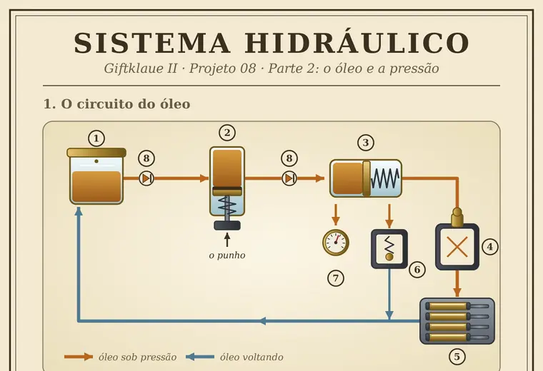
Os tubos de veneno
O óleo empurra um êmbolo flutuante, e o êmbolo empurra o veneno. O óleo nunca encosta no veneno. O tubo é de vidro grosso de laboratório, com trava de baioneta de bronze por fora, selo de cera, bico de porcelana com ponta banhada a ouro e um anel de cor que diz qual veneno está dentro.
Pra trocar, gira o anel um quarto de volta, puxa o tubo e encaixa outro. Os tubos de reserva ficam na mochila alquímica (Projeto 09). No golpe, a garra perfura o alvo, a válvula abre na ponta e a dose sai por um canal de vidro dentro da garra.
Só vidro, cera, porcelana e ouro tocam o veneno, com o bronze e o aço por fora. O arsênio da Ruína (Projeto 02) corrói metal, e o tubo já nasce preparado.
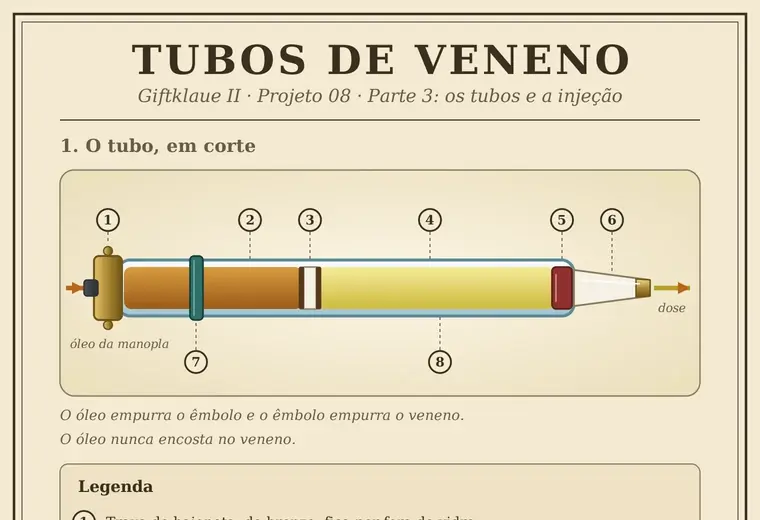
Limites
- Mais força, menos curso: nada de dedo rápido.
- A força volta pela armação até o cotovelo e o ombro. Sem apoio firme, o braço não segura.
- Vazou óleo, entrou ar ou o couro da vedação secou: a manopla perde a força.
Em estudo e em aberto
- Disco regulador no punho, que muda a proporção da mistura.
- Dois tubos que só se misturam na ponta da garra, pro arsênio da Ruína.
- O tubo da fórmula sozinho cura, e poderia salvar um aliado.
- O veneno de cascavel pode encher um tubo, a decidir.
Quanto levanta, segura ou quebra, a pressão e o limite, quanto veneno cabe em cada tubo e quantos tubos: a definir com o mestre.
Projeto 12
Giftklaue III
manopla leve, com ataque duplo
Pendente de aprovação do mestre
A terceira versão da manopla. A Giftklaue II está pronta e aprovada, mas pesa 12 kg e ativar custa 1 ação e 5 de energia. A III nasce pra pesar menos e pra bater duas vezes.
São três mudanças. A armação vira duralumínio, uma liga de alumínio e cobre descoberta pelo alemão Alfred Wilm em 1903, com uns 1/3 do peso do aço. O aço fica só nas peças que seguram pressão. O peso sai do braço do Marck e vai pro quadril, por um arnês de cintura. E a cotoveleira ganha um engate rápido: a luva solta do braço e cabe no estojo ou na mochila.
O ataque duplo
O gatilho tem dois estágios. Puxado até o meio, dá um golpe só. Puxado até o fim, a luva golpeia, a mola reabre as garras e um relógio de relojoeiro (barrilete, came, escape de alavanca e balancim) conta um tic. Um segundo acumulador, menor, dá o segundo golpe. O Marck golpeia uma vez com o braço e a luva faz o outro sozinha. A bomba do punho dá corda no relógio, aos poucos.
O que muda da II pra III
- Peso: a II tem 12 kg, a III vem bem mais leve. Quanto cai, o mestre decide.
- Armação: de aço e couro pra duralumínio vazado.
- Carga: de tudo no braço pra um arnês de cintura.
- Ativar: a II custa 1 ação e 5 de energia. Na III o mestre decide, já que a luva pesa menos e o Marck está mais forte.
- Golpes: de 1 por ação pra 1 ou 2 por ação.
- Transporte: engate rápido, a luva desmonta.
O Marck também melhora: está treinando e comendo melhor. A luva ajuda, mas o corpo dele conta cada vez mais.
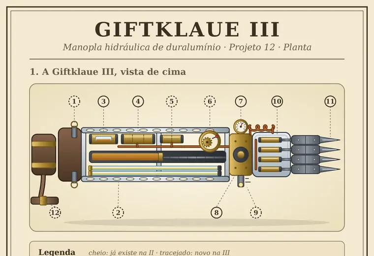
Limites
- O segundo golpe sai de um acumulador menor, então pode ser mais fraco.
- O golpe duplo gasta o dobro de óleo e esvazia os dois acumuladores. Entre um e outro, tem que bombear e dar corda de novo.
- O relógio emperra com sujeira e umidade.
- O duralumínio amassa e dobra mais fácil que o aço.
Peso final, custo de ação e energia e dano do segundo golpe: a definir com o mestre.
Projeto 16
Luva de módulos
trilho na palma com módulos trocáveis
Pendente de aprovação do mestre
Base pra ampola (Projeto 14), o choque (Projeto 15) e uma ferramenta. Pode virar a base da Giftklaue III (Projeto 12), a decidir com o mestre.
Uma luva de couro com um trilho de aço na palma. Os módulos deslizam pelo trilho, chegam à ponta e viram pra frente da mão em volta de um pivô de latão. Cada módulo tem o mesmo pé, em cauda de andorinha, com uma trava de mola e dois contatos que pegam a carga do cristal no punho. A luva aceita ampola, choque e uma pinça com gazua pra trabalho.
Os dedos ficam livres. O módulo fica na frente da mão, não no lugar dela. A energia vem do cristal por um cordão de contas de porcelana até uma tira de contatos de latão debaixo do trilho. Só o choque e a trava elétrica usam carga, e a ampola e a pinça são mecânicas.
Problema na construção
O trilho precisa ser reto: um desvio emperra o módulo, e o pino de mola gasta rápido. O mestre decide como jogar esse problema.
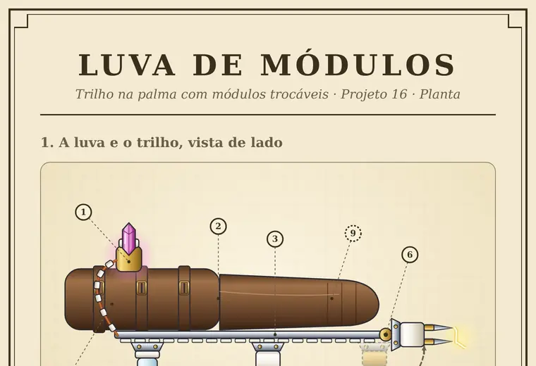
Limites
- Trilho torto ou sujo: o módulo emperra e o Marck perde tempo no meio da luta.
- Pino de mola gasto: o contato falha e o choque não sai.
- A luva só tem um trilho. Um módulo armado por vez.
- O pivô é uma peça só. Se quebra, o módulo fica solto.
Custo da troca em ação, peso exato dos módulos e se entra na Giftklaue III: a definir com o mestre.
Parte II
Venenos
O que corre pelos tubos.
Projeto 02
Ruína
Aprovado pelo mestre
Experimento do Marck, em andamento
Os outros viam um remédio. Marck viu uma ferramenta.
A droga da doutora estava na enfermaria da base, e ele passava por lá mais do que precisava. Não era pelos doentes. Era pra ouvir. Quando o remédio entrava, as células do paciente recebiam a ordem de se refazer numa velocidade que nenhum corpo foi feito pra suportar, e o homem na maca gritava como se o costurassem por dentro com agulha em brasa. As enfermeiras desviavam o olhar. Marck abria o caderno e anotava o tempo entre um grito e outro.
Todos ali queriam que a dor parasse. Ele queria saber por que ela existia. E quanto mais perguntava, mais uma ideia se fechava na cabeça dele, limpa e fria: a fórmula não curava ninguém. Ela só empurrava a vida da célula pra frente, mais rápido do que a célula aguentava. A cura era um efeito colateral de uma força que ele podia apontar pro outro lado.
O arsênio já fazia metade do trabalho. Ele não rasga nem queima por fora. Entra quieto e apaga a energia da célula por dentro. Agora imagine essa célula, sem fôlego, recebendo a ordem de se reconstruir sem parar. Marck imaginou, e riu sozinho na bancada, às três da manhã, com a mão tremendo de empolgação. Não lembrava da última vez que tinha comido.
Ele sabia o que aquilo era. Conhecimento era a única coisa que ele não conseguia largar. Projeto, projeto, projeto. Cada resposta abria duas perguntas, e ele precisava da próxima como outros homens precisam da próxima dose. Se alguém dissesse que ele estava viciado, concordaria sem vergonha nenhuma.
O resultado, no papel dele, é uma morte que começa pequena. A pele em volta do corte fica cinza e cede. O corpo enfraquece, o osso perde a firmeza, e por fim a medula, onde o sangue nasce, para de responder. Cada célula que cai solta o próprio veneno sobre as vizinhas. Não precisa de segunda dose. A ruína anda sozinha.
Ele tentou levar aquilo pro ar, um gás pras trincheiras. No ar, o composto se desmanchava antes de chegar a alguém, e Marck passou duas noites sem falar com ninguém, furioso com um problema que se recusava a obedecer. Foi quando olhou pras garras das manoplas e entendeu que a resposta sempre esteve ali: levar o veneno direto à carne, sem dar tempo dele se perder.
Alguém poderia perguntar quantos teriam que cair até ele aprender o que queria. Marck nunca fez essa conta. Não por descuido. O número simplesmente não mudava a resposta.
Restam três coisas que ele ainda anota: o arsênio corrói os tubos, então o composto não pode esperar guardado por muito tempo; o efeito completo leva dias; e a velocidade que ele quer só vem com um catalisador arcano que ele ainda não domina. Antídoto não existe, e não é a prioridade dele.
Na última página do caderno, com a letra apertada de quem não dorme, tem uma única frase sublinhada duas vezes: falta pouco.
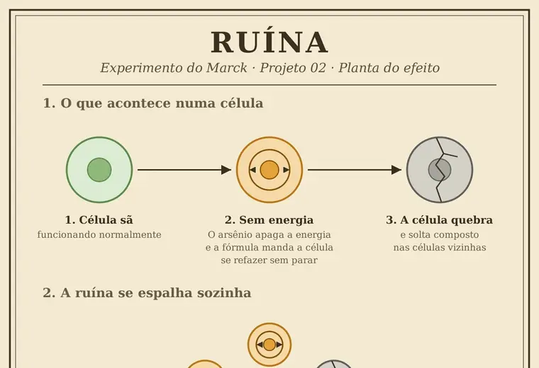
Efeitos e tempos pendentes de aprovação do mestre
Projeto 03
Veneno de luta
nome a definir
Aprovado pelo mestre
O veneno que já corre pelos tubos do protótipo. Deixa o corpo da vítima dormente e derruba os atributos físicos dela. Efeito, duração e origem pendentes de aprovação do mestre.
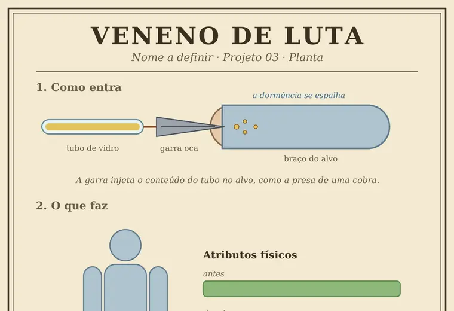
Projeto 14
Ampola injetora
tubo de veneno trocável, em três versões
Pendente de aprovação do mestre
Liga com a hidráulica do Projeto 08 e com o Projeto 01. Os tubos de reserva ficam na mochila alquímica (Projeto 09).
É o mesmo tubo de veneno em três versões, todas com o mesmo soquete. A versão A é a do golpe: garras ocas, e o veneno entra quando a garra crava. A versão B tem agulhas finas, uma escala riscada no vidro e um botão lateral que trava o êmbolo na dose escolhida. A versão C é uma injeção manual, com êmbolo de madeira e bronze apertado com a palma.
O veneno só toca vidro, cera, porcelana e ouro, como ficou decidido no Projeto 08. O tubo tem um anel de cor, pra achar o veneno certo sem tirar todos. A troca é em três gestos: gira o anel, puxa o tubo e encaixa outro.
Qual usar
- A: golpe rápido, a dose é o que cabe no tubo.
- B: dose medida, mais lenta de usar.
- C: aplicação com calma, em alvo parado. Não serve em combate.
Problema na construção
O vidro trinca na hora de selar com cera quente, e a cera velha deixa vazar. O mestre decide como jogar esse problema.
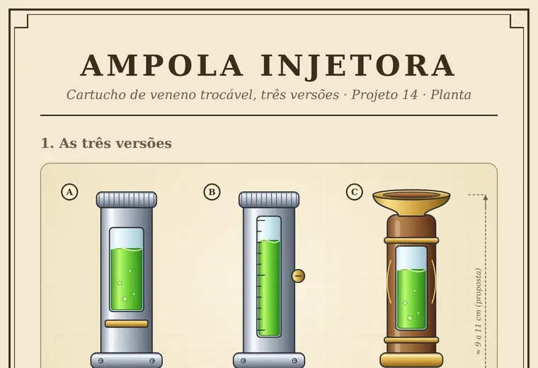
Limites
- O vidro é o ponto fraco: batida forte quebra o tubo.
- O arsênio da Ruína corrói metal, então pede o tubo todo de vidro e porcelana.
- Cera velha e êmbolo seco deixam vazar. Cada tubo de reserva precisa de cuidado.
- A versão B é mais lenta de usar, e a C não serve em combate.
Quanto veneno cabe, quantos tubos o Marck leva e o dano de cada versão: a definir com o mestre.
Parte III
Equipamento de campo
O que ele leva pra rua.
Projeto 07
Bomba de fumaça
pra despistar e fugir
Aprovado pelo mestre
Invenção do Marck, feita de sucata
A bomba é uma lata de latão grosso, de sucata do ferro-velho. A tampa é rosqueada e fecha a lata, e tem furos em círculo, pra fumaça sair por todos os lados.
A fumaça arde nos olhos e na garganta. Quem entra tosse e sai correndo, sem saber pra onde. Não mata, e o vento muda tudo. O Marck testa de máscara de gás, com o vento a favor.
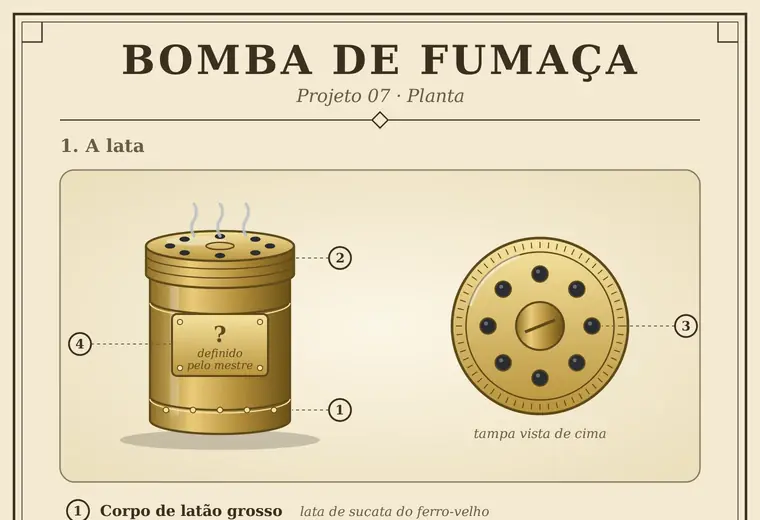
Conteúdo, alcance e duração a definir com o mestre.
Projeto 09
Mochila alquímica
kit de campo
Pendente de aprovação do mestre
Kit de campo do Marck. O que está tracejado na planta é proposta
É uma mochila de couro curtido e lona encerada, com aba de duas fivelas de latão e uma alça de mão. Por fora tem o bolso dos tubos de reserva da garra, o bolso do tripé e da lamparina e uma esteira de campo enrolada embaixo.
Aberta, tem o porta-tubos da garra, uma bandeja de madeira dobrável que vira bancada de campo, um estojo de reagentes com frascos de vidro âmbar, o kit de laboratório de campo, almofariz, lupa e pinça, uma lamparina a álcool com tripé de latão, o bolso da máscara de gás e do antídoto básico e um caderno de laboratório.
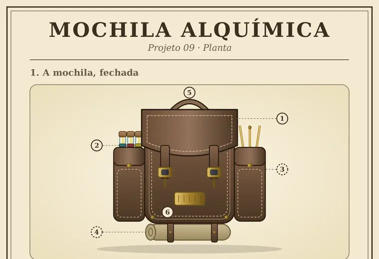
Como o tubo fica guardado
O vidro é o ponto fraco. Feltro embaixo, cinta de couro em cima e couro acolchoado dos lados seguram o tubo contra batida e vibração. O anel de cor fica à vista, então o Marck acha o tubo certo sem tirar todos.
Limites
- Vidro quebra: batida forte estraga tubo e frasco.
- Mochila cheia pesa e atrapalha pra correr.
- É kit de campo, não laboratório. Coisa grande pede lugar fixo.
- Chama e produto químico pedem lugar aberto e longe de gente.
O que cabe, quanto pesa e o que dá pra fazer com ela: a definir com o mestre.
Projeto 11
Bota de agilidade
Federschritt, nome a definir
Pendente de aprovação do mestre
Pra ganhar agilidade: uma bota que guarda a energia do passo e devolve de uma vez.
O Marck é fraco, então resolveu a velocidade com engenharia. A bota tem uma coluna de mola atrás da perna, no estilo da perna de molas que o russo Nicholas Yagn patenteou em 1890, e um fole de couro no calcanhar. Cada passo aperta o fole e empurra um pouco de óleo pra um acumulador de latão, que guarda a pressão. Um manômetro mostra quanta carga a bota tem.
Pra soltar, o Marck empurra a alavanca de ponta com o dedão. Um cabo de aço dentro de uma bainha (o cabo Bowden) abre a válvula, a mola do acumulador empurra o óleo pro cilindro de impulso, no salto, e a sapata de aço empurra o chão. Uma trava de segurança, com pino e argola, evita que a carga saia sozinha.
Pra que serve
- Salto: o impulso empurra reto pra cima.
- Desvio: ele inclina o corpo pro lado e solta, pra uma esquiva rápida.
- Arrancada: ele inclina pra frente e solta, pra um tranco curto de velocidade.
A bota não cria força. Ela guarda a do próprio passo e devolve de uma vez, com o mesmo óleo e as mesmas peças da manopla (Projeto 08).
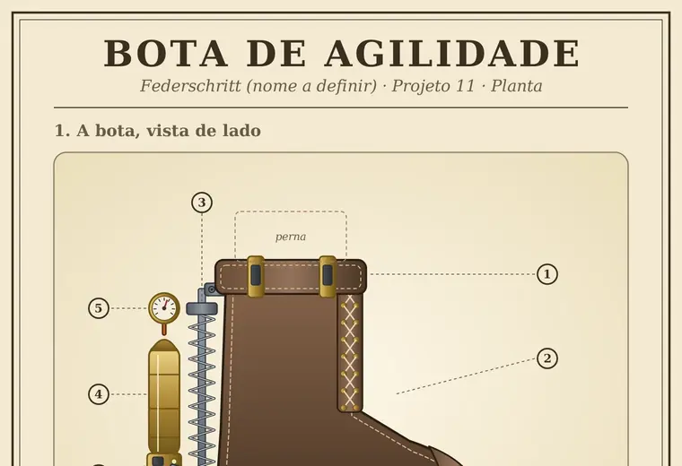
Limites
- Só carrega andando ou correndo. Parado, não junta nada.
- Cada impulso gasta a carga que o manômetro mostra.
- Faz barulho: o fole chia e a sapata bate no chão.
- Óleo vazando ou ar na linha deixa o impulso fraco.
- O Marck é fraco: a coluna leva o peso da bota pro chão, não pro joelho, mas a bota pesa.
Altura do pulo, distância do desvio, custo de ação e energia e quanto tempo pra carregar: a definir com o mestre.
Projeto 15
Tesoura de choque
pinça de latão com choque elétrico
Pendente de aprovação do mestre
Usa o cristal e a fiação de porcelana do Projeto 13. Dá choque no toque e ajuda o Marck, que é fraco fisicamente: a tesoura faz o trabalho.
Parece uma tesoura grande de latão, mas as pontas são eletrodos de aço e as lâminas não cortam. Aperta o cabo, a corrente passa por uma bobina de indução e uma faísca salta entre as pontas. Quem leva o toque sente um choque curto: dor, tremor e perna que falha.
A bobina de indução vem do século XIX. Um vibrador liga e desliga a corrente várias vezes por segundo, e a bobina secundária, com muitas voltas de fio fino em sulcos de vidro com cera (a técnica da bobina do prato, Projeto 6), sobe a tensão. As luvas das lâminas, o pivô e o cabo são de porcelana, porque o Marck ficou sem borracha. Um cordão de contas liga tudo e dobra quando a tesoura abre e fecha.
Problema na construção
Precisa isolar o cabo, e ele ficou sem borracha na Fiação. Uma luva de porcelana rachada deixa a corrente passar pra mão do Marck. O mestre decide como jogar esse problema.
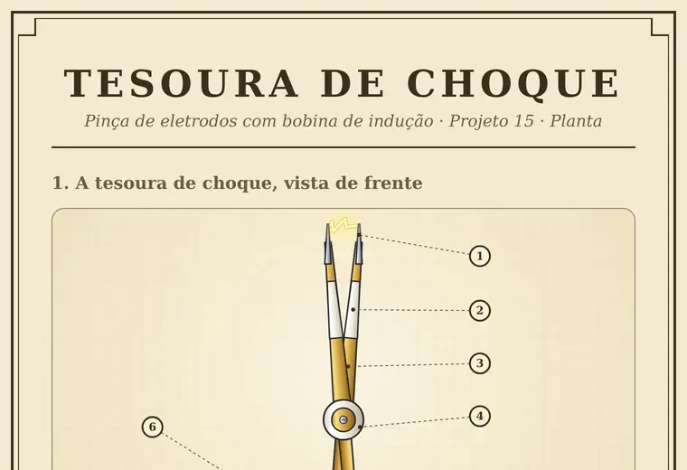
Limites
- O choque também pode atingir o Marck, se a mão estiver molhada ou o cabo trincar.
- Porcelana rachada deixa a corrente passar. O vibrador chia e entrega o Marck.
- Cristal vazio não faz nada. Em lugar molhado, a faísca vai pro lado errado.
- Gasta uma carga inteira a cada poucas descargas.
Efeito do choque, dano, alcance real e número de descargas por carga: a definir com o mestre.
Projeto 17
Familiar mecânico
sapo de cobre que espia e leva recado
Pendente de aprovação do mestre
Um batedor pequeno, pro Marck espiar e mandar recado sem se expor. Liga com o rádio (Projeto 04).
Um sapo de cobre do tamanho de uma mão aberta, com olho de vidro verde. Anda e pula curto, movido por uma mola de relojoeiro. Dentro tem um cristal que alimenta só os sentidos dele: uma célula de selênio atrás do olho, que sente claro e escuro, um microfone de carvão no tímpano e um coerer, que recebe ordens por rádio. Um tambor de pinos, como o de uma caixa de música, guia os movimentos.
O recado vai num papel enrolado dentro de uma cápsula de latão na boca. Também pode avisar por rádio, ligado ao Projeto 04. Ele não luta: é pequeno, lento e faz barulho de perto.
De onde veio a ideia
Os autômatos de relojoeiro do século XVIII, com mola e tambor de pinos. A fotocondutividade do selênio (1873), o microfone de carvão (1877) e o coerer de Branly (1890). O sapo de cobre e o cristal alimentando o olho são invenção.
Problema na construção
O cobre oxida e as juntas travam. Azinhavre nas patas deixa o sapo manco. O mestre decide como jogar esse problema.
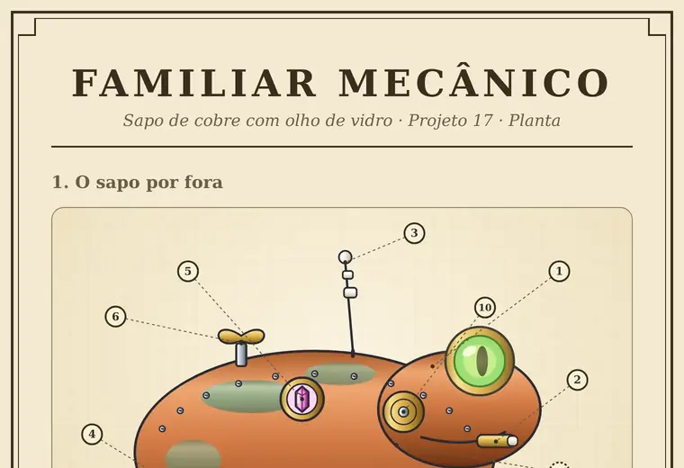
Limites
- O cobre oxida e as juntas travam. Precisa de óleo e de limpeza.
- O sapo é um batedor, não luta: pequeno, lento e barulhento de perto.
- O selênio só vê claro e escuro. Nada de rosto ou texto.
- Escuro total ou chuva forte atrapalham o olho e o coerer.
Distância do rádio, alcance, tempo de corda e o que ele leva de recado: a definir com o mestre.
Projeto 18
Gancho de arremesso
lançador de ar comprimido com gancho e carretel
Pendente de aprovação do mestre
Leva o Marck pra cima sem força dele, junto com a bota de agilidade (Projeto 11).
Um lançador de ar comprimido com uma câmara de vidro grosso, protegida por uma gaiola de latão e cintas de couro. Uma bomba de mão enche a câmara, e o manômetro mostra a pressão. O gatilho puxa um cabo de aço, do tipo Bowden, que abre a válvula de uma vez. O gancho, de três braços que dormem dobrados no cano, sai voando, abre no ar e prende num corrimão ou numa grade.
A corda vem de um carretel no cinto, com um motorzinho movido pelo cristal e um parafuso sem fim, que trava sozinho e não deixa a corda voltar. A manivela de reserva puxa quando o cristal acaba. A bota segura os pés na parede enquanto o carretel puxa.
De onde veio a ideia
A arma de linha Lyle (1878), que atirava uma corda pra navios, o rifle de ar de Girandoni (1780), o gancho de abordagem com braços dobráveis, o vidro de Jena (1884) e a válvula de segurança de Papin (1679). A câmara de vidro com gaiola e o gancho que dorme no cano são invenção.
Problema na construção
O vidro trinca sob pressão. A gaiola segura os cacos, mas o tiro se perde. O mestre decide como jogar esse problema.
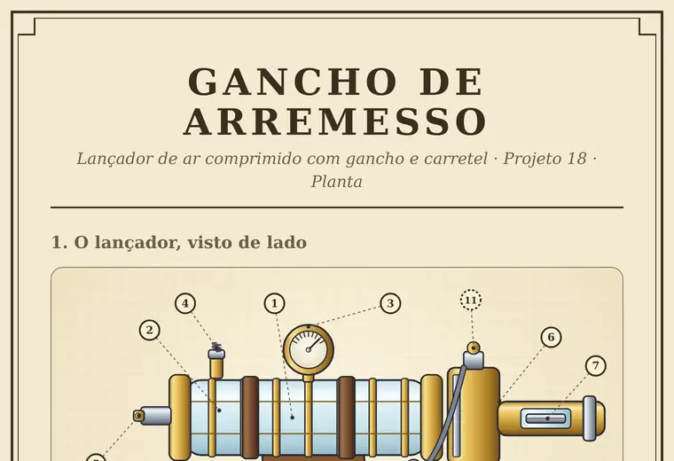
Limites
- O vidro trinca sob pressão. A gaiola segura os cacos, mas o tiro é perdido.
- Vazou o couro: a pressão cai e o gancho não chega.
- O gancho pode não prender, ou soltar. Quina viva corta a corda.
- O estalo do disparo chama atenção. Não é arma pra furtividade.
Alcance, peso máximo, pressão certa e o que acontece se o gancho solta: a definir com o mestre.
Projeto 19
Rifle de pressão de latão
rifle de ar comprimido feito de sucata
Pendente de aprovação do mestre
Combina com o jeito do Marck: tudo vem do ferro-velho. Dispara os dardos de veneno que o Projeto 1 já lista como melhoria.
Um pulverizador de jardim vira o cano. Um extintor velho e lâmpadas de latão viram o reservatório e a câmara. Lentes de binóculo viram a lente do manômetro e uma mira. O pescoço de um abajur vira a coronha, com uma dobradiça de latão que dobra o rifle. Uma bomba de mão enche o reservatório.
O gatilho fecha um circuito do cristal, e uma bobina puxa a haste da válvula, que solta o ar de uma vez. O ar empurra o dardo pelo cano. O dardo é de cortiça, com penas de seda e uma ampola de veneno que quebra no impacto, na ponta de uma agulha oca. A válvula elétrica não tem mola solta, então o disparo é um estalo seco.
De onde veio a ideia
O rifle de ar de Girandoni (1780), o manômetro de Bourdon (1849) e a válvula solenoide, de bobina e haste de ferro. A ideia do rifle montado de sucata (pulverizador, extintor, abajur e binóculo) é de uma montagem de oficina. O cristal como gatilho e a ampola no dardo são invenção.
Problema na construção
Vazamento nas vedações. O couro seca, a cera racha e a pressão não sobe. O mestre decide como jogar esse problema.
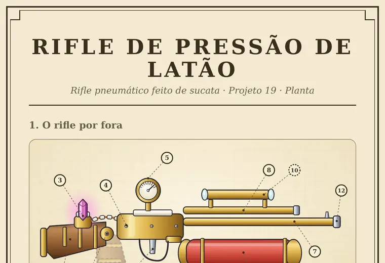
Limites
- Vazamento nas vedações: a pressão cai e o dardo não chega longe.
- Pressão demais e o reservatório estoura. O manômetro avisa, mas o Marck precisa olhar.
- Cristal vazio: o gatilho não abre a válvula. A bomba precisa de tempo e de força.
- Poucos dardos, e cada um é caro: veneno e vidro.
Alcance, dano do dardo, número de tiros por carga e quantas bombadas enchem o reservatório: a definir com o mestre.
Projeto 20
Mochila de braços
armação com quatro braços hidráulicos
Pendente de aprovação do mestre
Pro Marck, que é fraco, segurar, carregar e trabalhar na bancada. Usa a hidráulica do Projeto 08 e pode virar evolução da mochila alquímica (Projeto 09).
Uma armação de tubo de duralumínio, como a da Giftklaue III, com um eixo no alto e quatro braços: dois grandes, pra segurar e carregar, e dois pequenos, com pinça e lente, pra trabalho fino. A corrente gira cada braço em volta de uma coroa dentada, cilindros hidráulicos dobram o cotovelo, e um pantógrafo estica o alcance. O peso desce pro quadril, por um cinto, e a bolsa de couro nas costas serve de contrapeso e leva os tubos de reserva.
A pressão do óleo vem da passada: o joelho do Marck aperta uma bomba a cada passo, e um acumulador guarda a pressão pra quando ele parar. O cristal só abre as válvulas, por teclas de telégrafo no antebraço, com cordão de contas de porcelana. Tem manivela de reserva, pra quando o acumulador acaba.
De onde veio a ideia
O acumulador hidráulico de Armstrong (1850), o pantógrafo (1603), a corrente de rolos (1880), o esqueleto de Yagn (1890), que usava a passada pra ajudar a andar, e a tecla de telégrafo. Quatro braços numa mochila e a bomba presa à perna são invenção.
Problema na construção
Peso demais, e a corrente enroscando. O mestre decide como jogar esse problema.
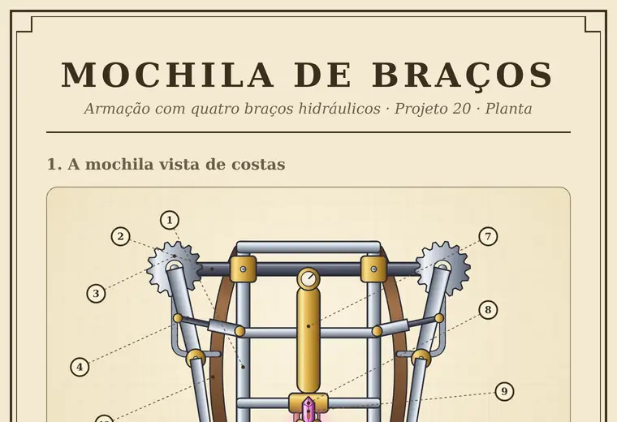
Limites
- Peso demais: o quadril cansa e o Marck anda pior. Tem que andar pra ter pressão.
- Corrente enroscando: um braço trava no meio do movimento.
- Óleo vazando ou ar na linha: o braço perde força ou fica mole.
- Não é discreta. Ela é grande, faz barulho e chama atenção.
Peso total, carga de cada braço, número de braços e se vira evolução da mochila alquímica: a definir com o mestre.
Parte IV
Som e comunicação
Rádio, voz de trovão e os fios que ligam tudo.
Projeto 04
Rádio de frequências
nome a definir
Aprovado pelo mestre
Invenção do Marck, em uso
O Marck fez esse rádio pra se comunicar com os outros.
O rádio é único. Em vez de falar numa frequência só, ele usa diferentes frequências, e isso disfarça o sinal. Quem escuta não consegue dizer de onde a transmissão sai.
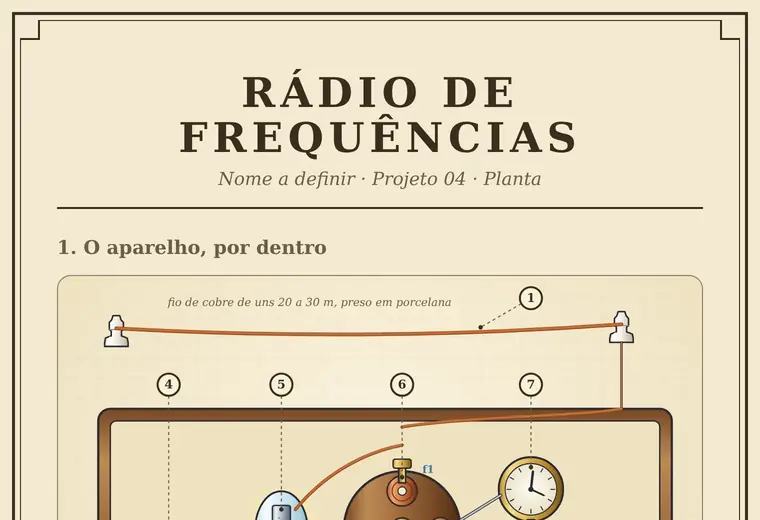
Alcance e dificuldade pra rastrear pendentes de aprovação do mestre.
Projeto 05
Donnerstimme
Voz de Trovão
Aprovado pelo mestre
Invenção do Marck, pro show na cidade
A Donnerstimme é um sistema de som pra cidade inteira. O plano é um show, e naquela cidade todas as fontes de comunicação vão estar bloqueadas. A voz não pode depender de nada que o bloqueio alcance.
O microfone é de cobre, mas não fala direto pros pratos. A voz primeiro é gravada num disco de cera, que gira a 78 voltas por minuto. Uma agulha corta a voz na cera e, cerca de 6 voltas depois, outra agulha lê o que acabou de ser gravado. O resultado é um atraso de uns 5 segundos entre quem fala e o som que sai pela cidade.
A máquina tem dois lados. No lado frio ficam o microfone e a gravação, sem nenhuma pedra, porque a cera derrete perto delas. No lado quente ficam a agulha de leitura, o amplificador (com válvula e pedra de éter) e o transmissor de saltos, que pula entre frequências pro sinal não ficar parado num lugar só.
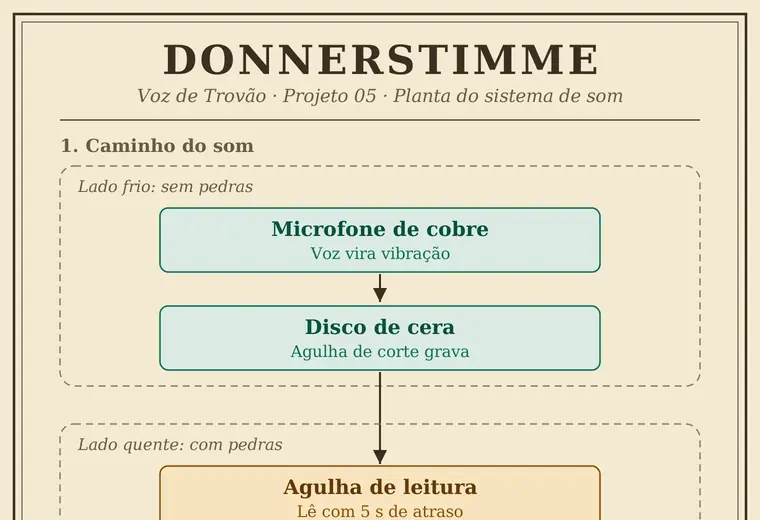
O sinal pela magnetita
O sinal não vai por fio até a cidade. A magnetita mestre, com uma bobina de 5 voltas de fio de cobre, manda o sinal pelo ar, e cada prato de som tem uma magnetita irmã que escuta e repete. No caminho, o sinal pula entre diferentes correntes de rádio.
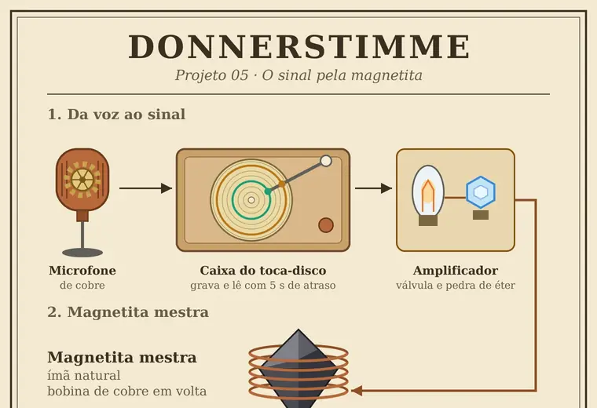
Os pratos de som
Os pratos ficam espalhados pela cidade, longe do palco, pra a voz que sai deles não voltar pro microfone e virar ruído. A casca é de zinco (cobre no prato mestre) e a moldura é de madeira seca, presa com parafusos de latão. No foco fica uma lâmina de mica, que treme com o sinal e vira voz. Atrás do prato, a magnetita irmã com a bobina de cobre. Ferro e aço ficam longe da magnetita.
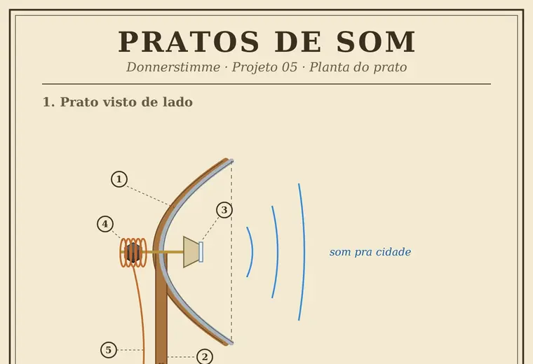
Os fios dessa máquina, e o problema de fazer tudo sem borracha, estão no Projeto 06.
Em aberto: de onde vem a magnetita.
Tamanho, quantidade de pratos, alcance e custo a definir com o mestre.
Projeto 06
Fiação
parte da Donnerstimme
Aprovado pelo mestre
Parte da Donnerstimme, em andamento
Cada pedaço da Donnerstimme pede um fio diferente, e foi isso que travou o primeiro teste: o Marck tratou todo fio como se fosse igual.
Na bobina mestre, que manda o sinal, vão poucas voltas de fio grosso. Ali passa força, e fio fino esquentaria e perderia a voz no caminho. Já na bobina de cada prato, que só escuta, vão muitas voltas de fio fino, bem juntinhas. Quanto mais voltas, mais a magnetita ouve.
Da agulha de leitura até o amplificador o sinal é fraco, quase um sussurro, então vai fio médio, curto, com o fio de ida e o de volta afastados e presos. Do amplificador pro transmissor, e da bateria pros dois, só fio grosso. É onde a força corre.
Fio de sinal nunca anda colado em fio de força, senão um contamina o outro. Toda emenda é soldada.
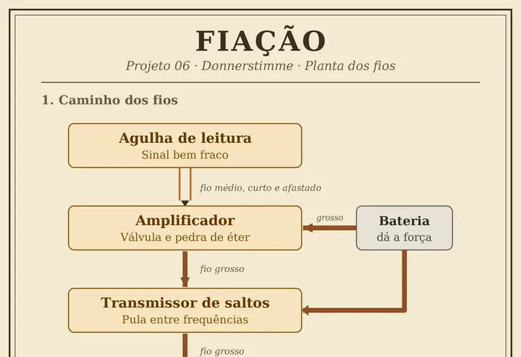
O problema: sem borracha
Marck, no ferro-velho
Não tinha borracha. Não tinha capa, nem seda, nem nada que servisse de pele para o cobre. Os fios ficaram nus, e fio nu não perdoa. Eles se enrolaram um no outro, encostaram, e a máquina morreu com um estalo seco e um cheiro de queimado.
Marck ficou parado olhando a fumaça subir. Não xingou. Ele nunca xingava quando tinha ideia vindo. Passou a língua nos dentes e começou a revirar o ferro-velho com as duas mãos.
"Se eu não posso cobrir o fio", disse, "então ninguém vai encostar nele. O ar vai ser a minha borracha."
Achou isoladores velhos de telégrafo, daqueles de porcelana branca, rachados no canto mas inteiros no que importava. Pregou uma tábua de madeira seca na bancada, sem prego de ferro, e aparafusou os isoladores em fila. Os fios de ida e de volta passaram por eles, bem esticados e afastados, e entre os isoladores ele encaixou pequenos pentes de madeira para manter a distância sempre igual. Fio nenhum ia encostar em fio nenhum. Acabou o abraço entre eles.
Depois veio a bobina mestre. Com o cobre grosso, que não cede nem se pedir, ele fez cinco voltas soltas no ar, uma hélice que se segurava sozinha. Dois pentes de madeira por baixo mantinham cada volta no seu lugar. No meio, a magnetita. Solda só nas pontas, duas gotas de estanho prendendo o cobre aos terminais. Entre as voltas, nenhuma solda. Só ar.
A bobina do prato era a parte difícil. Fio fino, muitas voltas, e sem capa. Marck pegou um tubo de vidro do kit químico e, com uma lima triangular, abriu um sulco em espiral, devagar, com a respiração presa. Cada volta do fio ia dormir no seu próprio sulco, com uma crista de vidro entre ela e a vizinha. Uma camada só, num tubo comprido. Quando terminou, passou cera derretida por cima, para as voltas não saírem do lugar e a umidade não entrar. Prendeu as pontas com solda e soprou.
Limpou as mãos na calça e olhou para a obra. Era feio, era improvisado e era dele.
Ligou a bateria. E esperou o mestre dizer se funcionava.
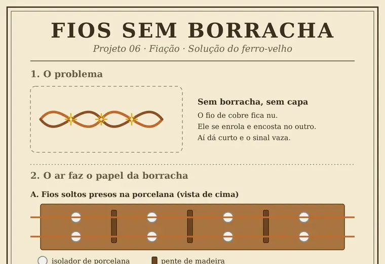
Bitolas, comprimentos e custo a definir com o mestre.
Parte V
Energia
O cristal e a fiação que alimentam as invenções novas.
Projeto 13
Cristal e fiação
bateria portátil e fiação de porcelana
Pendente de aprovação do mestre
A base de energia dos projetos 15 a 20. Une a fiação de porcelana da Fiação (Projeto 06) com uma bateria nova, o cristal.
Até aqui a energia das invenções do Marck dependia de bateria grande e de fio preso na bancada. O Projeto 13 faz uma rede pequena e portátil. O cristal guarda a carga. A fiação de porcelana leva a carga até a peça, sem nenhum fio encostar em outro. O ar continua sendo a borracha.
O cristal
É uma pedra rosada, em prisma, do tamanho de um dedão. Ela não gera energia. Guarda a carga que recebe e entrega devagar e firme, sem esquentar, vazar ou oscilar, e por isso é estável. Sem carregar, é só uma pedra rosa bonita. Fica num copo de latão fino com selo de cera, preso por uma mola de contato, e só porcelana e cobre encostam nele.
Como carrega
A carga entra por um magneto de manivela, parecido com o dos telefones de campanha, e leva cerca de 1 minuto de manivela. Antes de chegar à peça, a carga passa por um fusível de cartucho de porcelana e por uma chave de faca com base de porcelana.
A fiação, versão portátil
Botões de porcelana prendem o fio solto no ar. Tubos de porcelana deixam o fio atravessar a madeira sem encostar. Pentes de madeira mantêm o fio de ida longe do de volta. Onde o fio precisa dobrar, entra o cordão de contas: pedacinhos de porcelana enfiados no fio, que dobra sem encostar em nada.
Quem usa esse sistema
- Tesoura de choque (15): o choque da tesoura.
- Luva de módulos (16): a trava elétrica e o choque do módulo.
- Familiar mecânico (17): olho, microfone e receptor de rádio.
- Gancho de arremesso (18): o motor do carretel.
- Rifle de pressão (19): a válvula do gatilho.
- Mochila de braços (20): as válvulas dos braços.
De onde veio a ideia
Fiação de botões e tubos de porcelana, com fio solto no ar, existiu de verdade em casas do fim do século XIX até os anos 1930. O magneto de manivela vem dos telefones de campanha, e a chave de faca e o fusível de fio fundível eram peças comuns. A pilha de Leclanché (1866) é a bateria que o cristal substitui, sem o líquido que vaza. O cristal em si é invenção, como a magnetita da Donnerstimme.
Problema na construção
Porcelana trinca com batida, e o Marck só tem isoladores velhos. Se um isolador quebra no meio da montagem, o fio encosta e queima o fusível. O mestre decide como jogar esse problema.
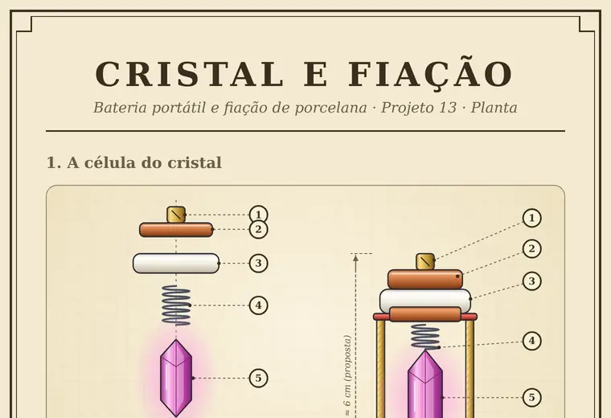
Limites
- Porcelana trinca com batida. Isolador quebrado deixa o fio encostar.
- Fio solto no ar pede cuidado com umidade, poeira e gente passando perto.
- Curto-circuito esquenta e queima o fusível. Sem fusível, estraga o cristal.
- O cristal guarda pouco, e vazio não serve. Carregar leva tempo e braço.
- A manivela faz barulho. Quem escuta sabe que tem alguém carregando.
Quanto carrega por vez, quanto dura cada carga, tamanho final, custo e a origem do cristal: a definir com o mestre.
Parte VI
Casa e oficina
Onde ele mora e trabalha.
Projeto 10
Laboratório
no porão da mansão
Aprovado pelo mestre
O laboratório do Marck, no porão da mansão
O laboratório do Marck fica no porão de uma mansão. É um porão grande, debaixo da terra, só de máquinas e laboratório: sem janela e sem lugar de dormir. Todas as coisas do apartamento onde ele montou tudo estão lá, e o Marck está montando o laboratório de novo.
O porão
Pra imaginar o lugar: a escada desce em tijolo aparente, estreita, com degraus de madeira escura, corrimão preto e lamparinas de ferro na parede. Lá embaixo o porão é de pedra bruta, com vigas de madeira aparentes no teto, piso de concreto, uma porta de madeira com dobradiças de ferro e lâmpadas em trilho. Como é debaixo da terra, o ar entra e sai por dutos, e a fumaça da forja sobe por uma chaminé.
Como ele chegou nesse lugar
O orfanato onde o Marck cresceu fica em Nova York, e foi lá que ele ganhou renome.
O laboratório é grande porque tem muitos patrocinadores por trás dele. O Marck trabalha no exército, e o dinheiro do exército vem junto com o dos patrocinadores, que ajudam e querem saber das invenções dele. Na prática, ele trabalha pro governo.
É por isso que o apartamento tinha tanta coisa: ele quase não saía de lá. Saía pra comprar comida e pra voltar. Quando pega férias, vai pra Las Vegas. Ele tem dois empregos: trabalha no jornal e trabalha pro governo.
Depois dos 18 anos ele foi morar nesse apartamento e construiu o lugar aos poucos. Cada coisa dali foi feita ao longo dos anos, conforme ele foi conseguindo o que precisava. Agora tudo isso foi pro porão da mansão.
As salas
- Salão de pedra e Estudo: planos, livros, mesa de desenho e a mochila alquímica pendurada junto da escada. É o que se vê ao descer.
- Laboratório central: ilha de pedra, capela de exaustão, destilador, centrífuga e autoclave. Aqui ele mistura, destila e testa.
- Toxinas: venenos e antídotos, com antecâmara. O ar entra pela antecâmara e sai pelo poço de ventilação.
- Oficina de máquinas: forja com chaminé, torno, prensa, furadeira e a bancada da manopla.
- Elétrica e gerador: pilhas, bobina, gerador e o cristal do Projeto 13.
- Câmara escura: onde as fotos das câmeras nascem.
- Depósito: pólvora, querosene, óleo e carvão, no fundo, longe da forja, com a boca de carvão e o monta-cargas.
- Sala secreta: só o Marck sabe. Rádio, cofre e o caderno, atrás do armário da câmara escura.
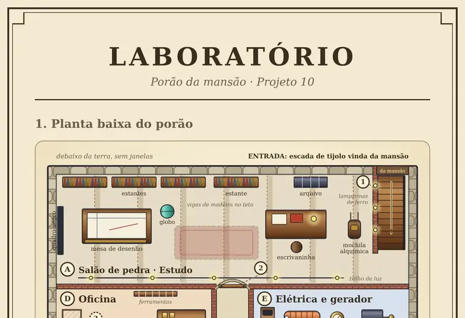
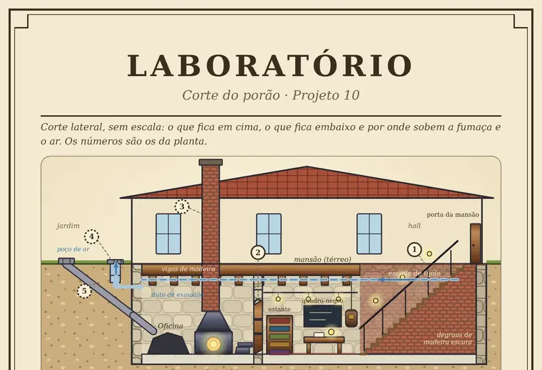
Segurança
- Pólvora e forja ficam longe uma da outra: a forja na oficina, a pólvora no depósito.
- Toxinas: antecâmara e ar sempre entrando, nunca saindo. O ar sai pelo poço de ventilação.
- Fumaça: a chaminé leva a da forja. Sem janela, nada queima sem exaustão.
- Fogo: baldes de areia no laboratório, na oficina e no depósito. Água não apaga óleo.
- Saídas: a escada de tijolo e a saída de emergência até o pátio.
De quem é a mansão e onde fica, quem mais sabe do porão, o tamanho dele e o que cabe, se a mansão tem eletricidade e água, se a chaminé aguenta a forja, quanto custou montar, quanto tempo leva e o que dá errado no meio da obra, e de onde vêm a magnetita e as cobras do terrário: a definir com o mestre.
Fim do volume
20 projetos até agora. Os novos entram aqui conforme o Marck for criando.